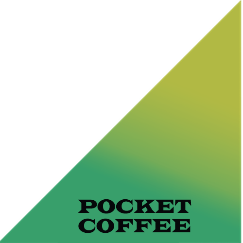
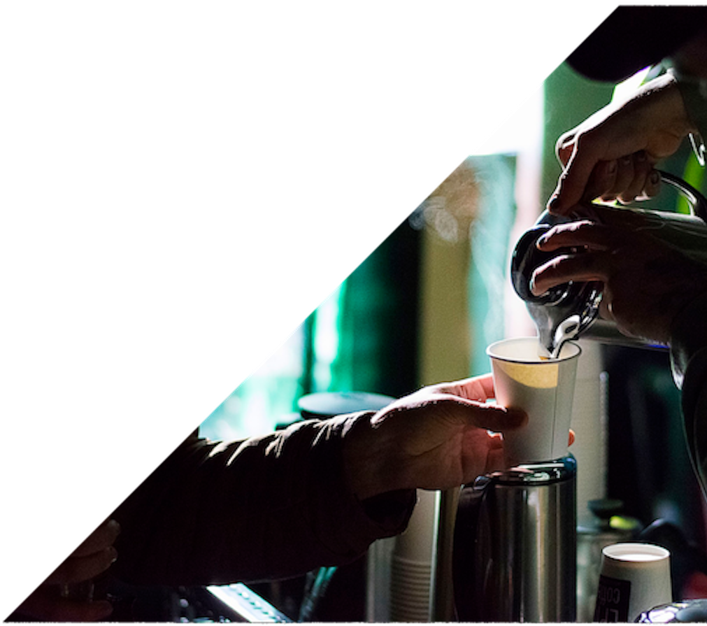
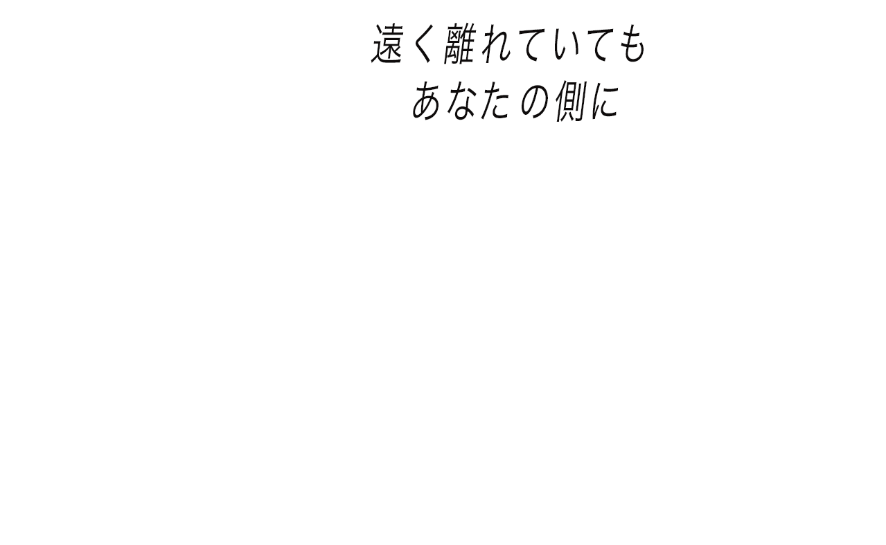
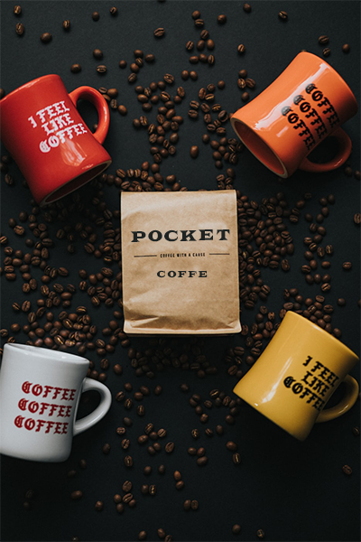
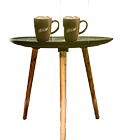

<!DOCTYPE html>
<html lang="en">
<head>
    <meta charset="UTF-8">
    <meta name="viewport" content="width=device-width, initial-scale=1.0">
    <link rel="stylesheet" href="reset.css">
    <link rel="stylesheet" href="style.css">
    <link href="https://use.fontawesome.com/releases/v5.6.1/css/all.css" rel="stylesheet">

    <title>POKET COFFE</title>
</head>
<body>
<div class="main">
    
    <header　class="header"><div class="logo">  </div></header>
<section class="item item-l">
   <a href="index.html"></a>
</section>
<section class="item item-m">
</section>
<section class="item item-s">  </section>
<section class="item item-ss">  </section>
<i class="fa fa-tint fa-5x"></i>
</div>
<section class="main-menu">
    <h1>POCKET COFFEEについて</h1><h2>1pack ¥5000+tax</h2>
    
    <div class="main-menu-item">
    <p>「POCKET COFFE」は、コーヒーの本場ブラジルから直送された厳選豆を使用しております。ご自宅や出先でも本場の味を楽しんでいただけるよう、紙小袋に入っており、場所を選ばずにお店での淹れたてのコーヒーのような香りと味わいをご賞味いただけます。
        店頭販売しているブラジル産品種「Barack beans」は希少価値が高い為、1日10袋限定品となっております。至福のひとときにいかがでしょうか。</p>
 </div>   
 
 
</div>
</section>
</body>
<footer><p>$copy;POCKET COFFEE. All rights reserved.</p></footer>
</html>